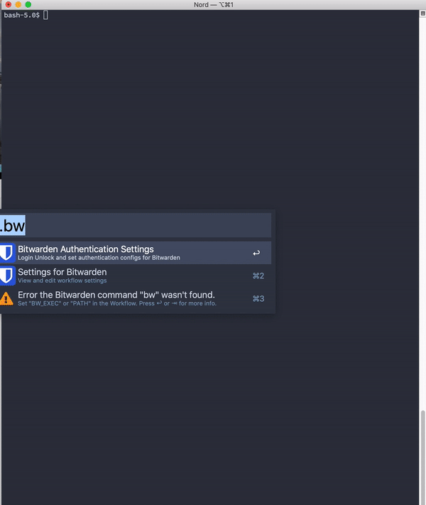
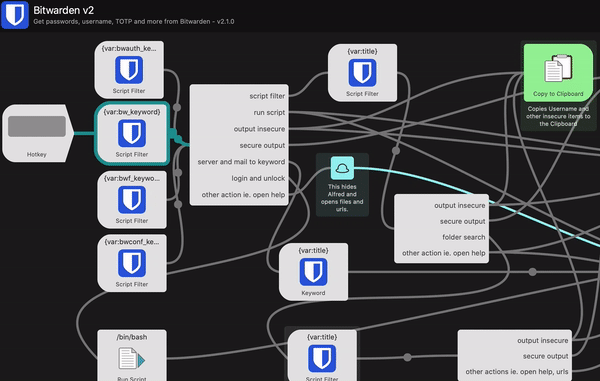
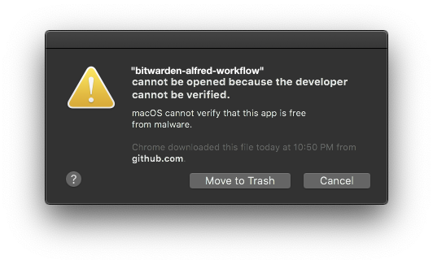

Access your Bitwarden passwords, secrets, attachments and more via this powerful Alfred Workflow
Requires Alfred 4.1 or newer; NOT tested with Alfred 3
In many cases the bw executable is located in a path outside of the default system PATH.
Please configure the Alfred Worklow variables PATH accordingly.
In a normal terminal type which bw and copy the dirname (everything except the “bw”) into the PATH workflow variable.
The best is to append it to the existing string and separate it by a colon (:)

To use, activate Alfred and type .bw to trigger this workflow. From there:
.bwauth for login/logout/unlock/lock.bwconfig for settings/sync/workflow update/help/issue reportsUp to version < 2.1.0 the Fuzzy filtering a la Sublime Text was default. Starting with version 2.1.0 Alfreds internal filtering is default.
You can change the search-/filtermode yourself easily. This gif shows the 3 steps which need to be done for it: 
| Name | Comment | Default Value |
|---|---|---|
| 2FA_ENABLED | enables or disables 2FA for login (can be set via .bwconfig ) | true |
| 2FA_NODE | sets the mode for the 2FA (can be set via .bwconfig ), 0 app, 1, email (not tested), 2 duo (not tested), 3 yubikey (not tested), 4 U2F (not tested) | 0 |
| AUTO_FETCH_ICON_CACHE_AGE | This defines how often the Workflow should check for an icon if is missing, it doesn’t need to do it on every run hence this cache | 1440 (1 day) |
| BW_EXEC | defines the binary/executable for the Bitwarden CLI command | bw |
| BW_DATA_PATH | sets the path to the Bitwarden Cli data.json | ”~/Library/Application Support/Bitwarden CLI/data.json”” |
| bw_keyword | defines the keyword which opens the Bitwarden Alfred Workflow | .bw |
| bwf_keyword | defines the keyword which opens the folder search of the Bitwarden Alfred Workflow | .bwf |
| bwauth_keyword | defines the keyword which opens the Bitwarden authentications of the Alfred Workflow | .bwauth |
| bwconf_keyword | defines the keyword which opens the Bitwarden configuration/settings of the Alfred Workflow | .bwconfig |
| CACHE_AGE | This defines how old the cached items can get, if expired the Workflow will trigger a new cache refresh with Bitwarden (this does not involve a sync with the Bitwarden server, values lower than 30 will be ignored and set to 30) | 0 (0 means disabled; unit is minutes) |
| DEBUG | If enabled print additional debug information, specially about for the decryption process | false |
| the email which to use for the login via the Bitwarden CLI, will be read from the data.json of the Bitwarden CLI if present | ”” | |
| EMPTY_DETAIL_RESULTS | Show all information in the detail view, also if the content is empty | false |
| ICON_CACHE_ENABLED | Download icons for login items if a URL is set | true |
| ICON_CACHE_AGE | This defines how old the icon cache can get in minutes, if expired the Workflow will download icons again. If icons are missing the workflow will also try to download them unrelated to this timeout | 43200 (1 month) |
| MAX_RESULTS | The number of items to display maximal in the search view | 1000 |
| MODIFIER_1 | The first modifier key combination, possible options, which can be combined by comma separation, are “cmd,alt/opt,ctrl,shift,fn” | alt |
| MODIFIER_2 | The first modifier key combination, possible options, which can be combined by comma separation, are “cmd,alt/opt,ctrl,shift,fn” | shift |
| MODIFIER_3 | The first modifier key combination, possible options, which can be combined by comma separation, are “cmd,alt/opt,ctrl,shift,fn” | ctrl |
| MODIFIER_4 | The first modifier key combination, possible options, which can be combined by comma separation, are “cmd,alt/opt,ctrl,shift,fn” | cmd,opt |
| MODIFIER_1_ACTION | Action executed by the first modifier | username,code |
| MODIFIER_2_ACTION | Action executed by the second modifier | url |
| MODIFIER_3_ACTION | Action executed by the third modifier | totp |
| MODIFIER_4_ACTION | Action executed by the fourth modifier | more |
| NO_MODIFIER_ACTION | Action executed without modifier pressed | password,card |
| OUTPUT_FOLDER | The folder to which attachments should be saved when the action is triggered. Default is \$HOME/Downloads. “~” can be used as well. | ”” |
| PATH | The PATH env variable which is used to search for executables (like the Bitwarden CLI configured with BW_EXEC, security to get and set keychain objects) | /usr/bin:/usr/local/bin:/usr/local/sbin:/usr/local/share/npm/bin:/usr/bin:/usr/sbin |
| REORDERING_DISABLED | If set to false the items which are often selected appear further up in the results. | true |
| SERVER_URL | Set the server url if you host your own Bitwarden instance - you can also set separate domains for api,webvault etc e.g. --api http://localhost:4000 --identity http://localhost:33656 |
https://bitwarden.com |
| SYNC_CACHE_AGE | This defines how old the sync cache can get, if expired the Workflow will trigger a new sync with Bitwarden (values lower than 30 will be ignored and set to 30) | 0 (0 means disabled; unit is minutes) |
| TITLE_WITH_USER | If enabled the name of the login user item or the last 4 numbers of the card number will be appended (added) at the end of the name of the item | true |
| type | action name |
|---|---|
| login | password |
| username | |
| url | |
| totp | |
| note | - (always copy the secret note) |
| cards | card |
| code | |
| identity | - (always copy the name ) |
| others | more (to show all item entries, can’t be NO_MODIFIER_ACTION) |
You can place per type one action name into the ACTION config, a combination is possible where it is not overlapping with more or another of the same type.
Good examples:
NO_MODIFIER_ACTION=url,code MODIFIER_1_ACTION=totp MODIFIER_2_ACTION=more MODIFIER_3_ACTION=password,card
Bad examples:
NO_MODIFIER_ACTION=url,password MODIFIER_3_ACTION=code,card
Install alfred cli
go get -u github.com/jason0x43/go-alfred/alfred
Clone this repo.
Link the workflow directory with Alfred
cd workflow; alfred link
Install dependency and run the first build
make build
Light blue
Hex: #175DDC
RGB: 23,93,220
Darker blue
Hex: #134db7
RGB: 20,81,192
Get icons as pngs here https://fa2png.app/ and this is the browser https://fontawesome.com/cheatsheet
The icons are based on Bitwarden Brand , Font Awesome and Material Design Icons.
Parts of the README are taken over from alfred-aws-console-services-workflow
A big thanks to all code contributors but also to everyone who creates issues and helps that this workflow matures.
Though this repository was a fork, it has 0 code reference anymore to the forked repo because of watchers and stars I decided to leave it this way and not to “unlink” it - by creating a new clean repository

Workaround:
Per the installation steps, you MUST add Alfred to the list of Developer Tool exceptions for Alfred to run any workflow that contains an executable (like this one)
bw cli and this workflow in parallel can possibly cause this error occurs Unexpected error. Exit code -1.The reason for that is when the bw cli is used in the terminal and the password is entered that a new session is initiated and the workflow’s session invalidated.
Workaround:
You can use the bash functions created by @luckman212 and located here in github
Download the bash file and source it in your own .bash_profile or .zshrc
With version 2.2.0 this workflow decrypts the secrets without using the bw cli. This is much faster but it might possibly can fail.
If it fails it falls back and uses the bw cli to get the secret. The decryption takes then more time again, was in the previous versions.
Workaround:
To use the workflows faster decryption you can follow this instruction by Bitwarden)
to update the encryption keys to the new mechanism.
The linked doc doesn’t specify how to force creation of a new key. It’s easy though: